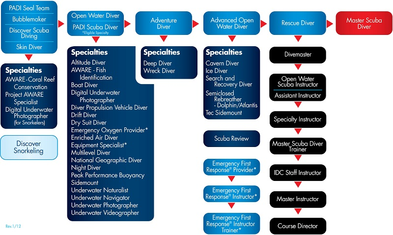
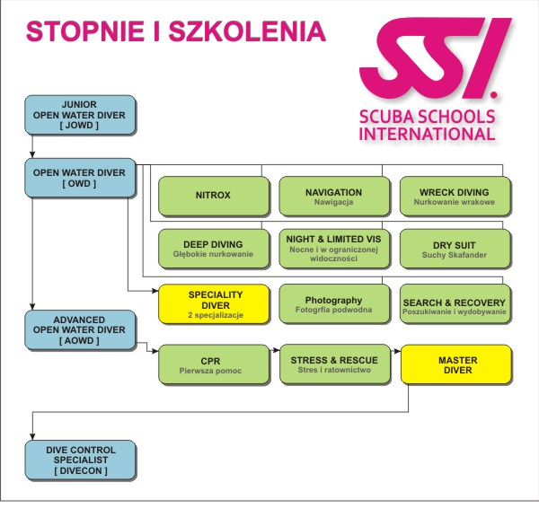

Aby zdobyć uprawnienia nurkowe należy ukończyć kurs, po którym otrzymamy nasz pierwszy stopień nurkowy.
Składa się on z kilku wykładów, treningów na basenie oraz praktyk na wodach otwartych. Wszystkie zajęcia odbywają się pod okiem wykwalifikwoanych instruktrów.
Zależnie od organizacji, w której będziemy odbywać szkolenie otrzymamy uprawnienia do nurkowania do około 20 metrów.
Już po kilku tygodniach będziemy mogli cieszyć się zdobytymi umiejętnościami i wypróbować je na dowolnych zbiornikach wodnych.
Przykładowe stopnie nurkowe w dwóch organizacjach
-
Stopnie nurkowe PADI

-
Stopnie nurkowe SSI
